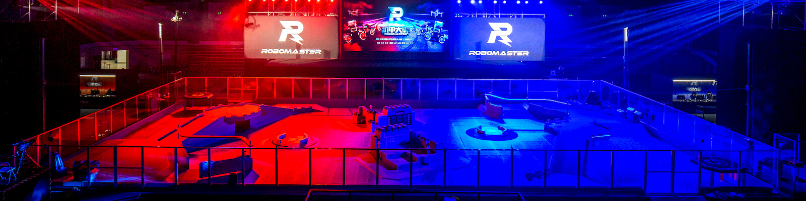
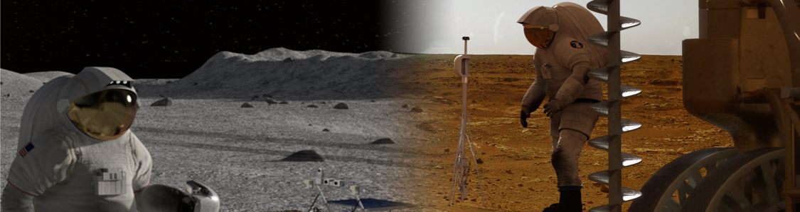

Robomaster

Robomaster is our primary competition, running from November to August every year. It is hosted by drone company DJI and consists of building a fleet of robots to compete in a video game-like competition against other teams. The robots fight by firing paintball and golf ball-sized projectiles at pressure sensitive plates on each robot.
Website: https://www.robomaster.com/en-US/
NASA Moon to Mars Ice & Prospecting Challenge

During the downtime not competing in Robomaster (most of Fall Semester), we enroll in a design challenge. The NASA Moon to Mars Ice & Prospecting Challenge is a design competition for Graduate and Undergraduates in which students design and demonstrate hardware that can extract water and assess subsurface density profiles from a simulated off-world test bed.